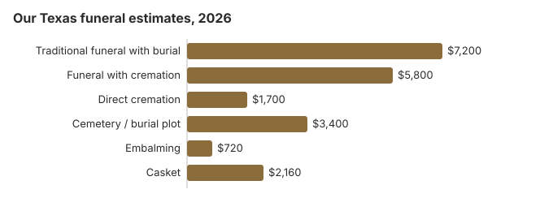

Funeral Costs in Texas: What Families Pay in 2026
What Each Part of a Texas Funeral Costs
Texas regulates who may run a funeral home, not what it charges, so a Houston quote, a Dallas quote and a small-town quote can be far apart.
| Service | Average Cost | Range |
|---|---|---|
| Traditional funeral with burial | $7,200 | $5,400 – $9,360 |
| Funeral with cremation | $5,800 | $4,640 – $7,540 |
| Direct cremation | $1,700 | $1,190 – $2,380 |
| Cemetery / burial plot | $3,400 | $1,700 – $6,800 |
| Embalming | $720 | $500 – $1,500 |
| Casket | $2,160 | $720 – $5,760 |
Where these come from: our cost model for Texas, not a survey of Texas funeral homes. They are planning estimates, not quotes or advice. Model details; disclaimer.
State sources: Tex. Health & Safety Code ch. 694; Health and Safety Code §711.002.

What Sets Texas Apart (South)
Texas heat means embalming tends to come up early in the arrangement meeting. In most cases it is still not required by law, and refrigeration works instead. If a home presses for a quick yes, ask whether it is a legal requirement or the home's preference; the Texas Funeral Service Commission (512-936-2474) can confirm the rule.
Texas Cremation or Burial
Cremation
- Roughly $1,700 direct
- Roughly $5,800 with a service
- No cemetery costs
- Memorial on your schedule
- 48% of Texas families
Traditional Burial
- Roughly $7,200 for the service
- Roughly $3,400 more for a plot
- Outer container usually demanded by the cemetery
- A grave to visit
- Metal casket: the US median is near $2,500 (NFDA 2023 General Price List Study); Texas sellers range widely
Detailed Texas Cost Guides
Our separate Texas pages go deeper:
Cremation Costs in Texas
Texas cremation from roughly $1,700 direct to $5,800 with a service, plus urns and scattering rules.
Burial Costs in Texas
A Texas burial in full, from a $3,400 plot to casket, vault, marker and opening: $16,320 to $20,820.
Why Texas Prices Vary
Several things move a Texas quote.
Big-city land and labor costs, the number of rival homes in town, and family and faith traditions all matter. Where cremation is common, and 48% of Texas deaths now end in cremation, cremation providers tend to compete harder on price.
Texas Charges People Overlook
A Texas quote often leaves some charges out.
- Embalming listed as required. Texas law doesn't require it; refrigeration satisfies the 24-hour rule.
Federal Rights in Texas
A Texas home that breaks the rule can be reported at ftc.gov, and the Funeral Consumers Alliance gives free guidance.
Texas City Estimates
Our estimates for Texas's large cities:
Payment Assistance in Texas
- Every Texas county commissioners court is responsible for disposing of a body when the family cannot pay (Tex. Health & Safety Code § 694.002), but the process and any limits are set county by county.
- The funeral home normally reports the death to Social Security, but the spouse or child must claim the $255 themselves at 1-800-772-1213 within two years.
- For a Texas veteran whose death on or after October 1, 2026 was not service-connected, the payer can recover up to $1,032 for burial and $1,032 for a plot on VA Form 21P-530EZ. See our veteran burial benefits guide, which explains eligibility.
- Our funeral assistance guide covers Medicaid and charities; this page covers having no money at all.
Educational Resources
- Funeral Consumers AllianceIndependent nonprofit consumer advocacy for funeral rights
- FTC Funeral RuleThe federal rule protecting funeral consumers
- Funeral Insurance GuideCompare final expense and burial insurance options
- Best Burial Insurance CompaniesSide-by-side comparison of top burial insurance providers
- Payment Assistance GuideGovernment programs and financial help for funeral costs
- Insurance Plan ComparisonCompare coverage, premiums, and payout speed across providers
Compare Funeral Costs
- Average Funeral Cost in 2026National cost breakdown with real prices
- Cremation vs. Burial Cost ComparisonSide-by-side price comparison to help you decide
- Funeral Cost BreakdownEvery line item explained: know what you're paying for
- Cheapest Funeral OptionsLower-cost alternatives, with typical price ranges
- Direct Cremation: Most Affordable OptionNFDA 2023 median $2,645 with a family-supplied container (latest available)
- How to Compare Funeral PricesStep-by-step guide to getting the best price
Lowest-Cost Ways to Do a Texas Funeral
| Option | Our estimate | Notes |
|---|---|---|
| Direct cremation | $1,700 | Cremation with no service, after the state's 48-hour wait (Tex. Health & Safety Code 716.004). |
| Direct burial | $3,600 | A prompt, unembalmed burial with no visitation; the cemetery bills grave and opening. |
| Green burial | $3,960 | No embalming or vault, at Texas cemeteries that permit natural burial. |
| Cremation + memorial | $5,800 | Cremation, with a gathering on a later date |
| Traditional funeral | $7,200 | Visitation, service, burial |
Texas Planning Steps
Nothing has to be signed on the first visit. Unless the body is to be buried or cremated within 24 hours, refrigeration buys time to compare.
- Pick burial or cremation: cremation in Texas or burial in Texas.
Texas death certificates: $20 for the first, $3 after that
Texas Vital Statistics sells a certified death certificate for $20, and each extra copy of that record bought in the same order is just $3 (25 Tex. Admin. Code § 181.22). The fee is kept even when the search turns up nothing (Texas DSHS costs and fees; checked October 29, 2026).
- Who can order: for deaths within the past 25 years, only immediate family, meaning the decedent's child, spouse, parent, sibling or grandparent, or someone who documents a direct, tangible interest in the record. Photo ID is required.
- Timing: walk-in service in Austin, weekdays 8 to 4, is usually same-day. Online orders are mailed 20 to 25 business days after receipt and mail orders take 6 to 8 weeks; expedited processing costs $25 and takes about four weeks, and the request has to arrive by overnight courier at 1100 W. 49th St, Austin, TX 78756.
- Regular mail orders go to P.O. Box 12040, Austin, TX 78711-2040, and the application has to be notarized.
- The funeral director normally files the certificate with the local registrar, which Texas requires within 10 days of death (Tex. Health & Safety Code § 193.003), and can order the first copies for you. Local registrars and county clerks also issue copies. Questions go to 888-963-7111.
Life insurers, banks, retirement plans and the county tax office for a vehicle title transfer each tend to want a certified copy. At $3 each, extra copies are cheap in Texas: five in one order cost $32, barely more than ordering one, and avoids a second notarized application later.
Texas's funeral commission, county help and veterans cemeteries
The Texas Funeral Service Commission is the state licensing agency for funeral directors and funeral homes; its complaint line is 512-936-2474.
The Funeral Consumers Alliance does not place Texas with the nine states that make a funeral director mandatory, so families may handle much of a funeral themselves and pay only for services they choose. Texas does require a 48-hour wait before cremation (Tex. Health & Safety Code 716.004).
Who has the right to decide
Texas law ranks who controls the disposition: a person named in a signed written instrument, then the surviving spouse, an adult child, a parent and an adult sibling (Health and Safety Code § 711.002). Funeral homes generally want that person's signature before they act, so settle it early if relatives disagree.
When the family cannot pay
Each county commissioners court is responsible for disposing of the body of a person whose family cannot afford it (Tex. Health & Safety Code § 694.002); the county indigent-services office handles requests, and rules differ by county (Tex. Health & Safety Code ch. 694).
Prepaid funeral plans
Prepaid funeral contracts in Texas are regulated by the Texas Department of Banking under Finance Code chapter 154, not by the funeral commission. Before signing, ask whether the plan is funded by a trust or an insurance policy, whether the price is guaranteed, and what refund applies if you cancel.
Veterans
Texas has five VA national cemeteries; the funeral director reserves space through the National Cemetery Scheduling Office (800-535-1117): Dallas-Fort Worth (214-467-3374), Fort Bliss (915-564-0201), Fort Sam Houston (210-820-3891), Houston (281-447-8686) and San Antonio (210-820-3891, cremated remains only). The state veterans cemeteries in Killeen (254-616-1770), Corpus Christi (361-248-4830), Mission (956-583-7227), Abilene (325-673-4446) and Lubbock (806-392-9927) take requests directly.
Texas to-do list
- Read two Texas price lists side by side, line by line.
- A memorial after cremation or burial avoids paying for embalming and a viewing.
- If money is short, the county indigent-services office should be your first call.
- For a veteran, compare a national cemetery with a private plot.
- Disputes over prices go to the commission at 512-936-2474.
Frequently Asked Questions
How much is a funeral in Texas?
Our estimates: $7,200 for a traditional funeral, 13% under the $8,300 national median; $5,800 when cremation follows a funeral service; from $1,700 for direct cremation. A grave, opening and related cemetery fees come to roughly $3,400 more.
Does cremation cost less than burial in Texas?
Yes. Direct cremation, about $1,700, is $5,500 below a $7,200 traditional funeral, and with a plot, opening and other cemetery charges near $3,400, the burial route costs about $8,900 more.
What rights does a Texas family have?
Under the FTC Funeral Rule a Texas home owes you written itemized prices and honest phone quotes, and must accept a casket you bought elsewhere at no charge. The Funeral Consumers Alliance says Texas doesn't require a funeral director for every step, and Commission rules require documented permission before embalming. Complaints go to the Texas Funeral Service Commission, 512-936-2474.
How can I cut Texas funeral costs?
Get three price lists and compare them, skip any service you don't need, and when the budget is tight, direct cremation near $1,700 is the floor. Choosing refrigeration over embalming saves roughly $720 more.
Is embalming required in Texas?
No. The Texas Funeral Service Commission's consumer guide says state law does not require embalming. Under 25 TAC § 181.4, a body not buried or cremated within 24 hours must be refrigerated at 34 to 40°F, embalmed, or sealed in a container, and Commission rules (22 TAC 203.32–203.33) require written or documented permission before any embalming.
Airlines and other common carriers usually require it, so ask about it if the body will be flown. For a Texas funeral without air travel, refrigeration satisfies the 24-hour rule and saves the roughly $720 this page estimates for embalming.
Who decides on a Texas funeral, and who pays?
Texas assigns the decision, and the bill, in Health and Safety Code §711.002. A person named in a signed written instrument comes first, then the surviving spouse, an adult child, a parent and an adult sibling. Whoever exercises that right is liable for the reasonable cost of interment and may seek repayment from the estate. If that person does not make arrangements by the 6th day after learning of the death or the 10th day after it, the right passes on. Measure Texas quotes against the national median of $8,300 with viewing and burial, or $6,280 with cremation (NFDA 2023).
What costs least in Texas?
In Texas the floor is direct cremation, around $1,700. Direct burial is the next step up at about $3,600, which is $3,600 below a traditional Texas funeral.
Which Texas funeral homes are cheapest?
Line up price lists from three Texas homes, then look first at the direct cremation and immediate burial lines. A casket or urn from another seller has to be accepted with no added fee.